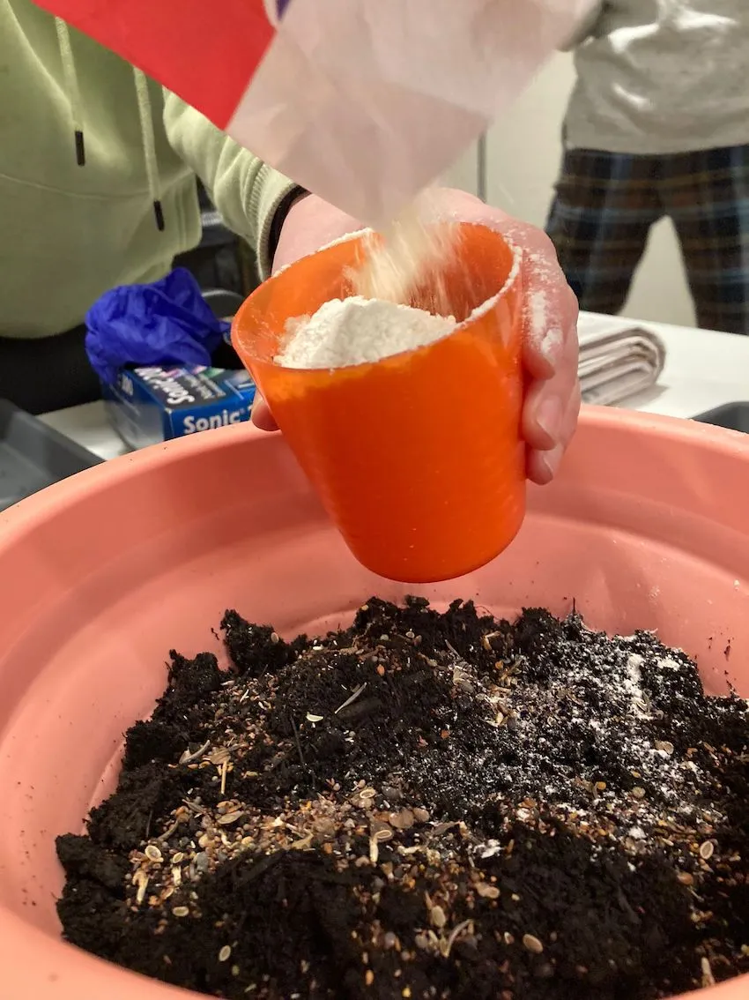
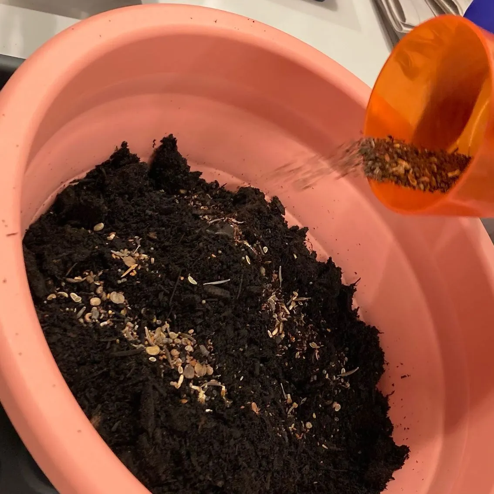
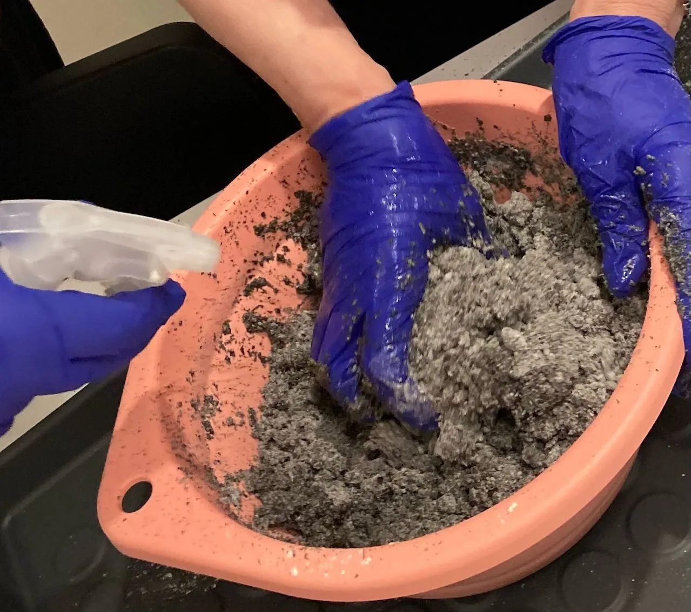
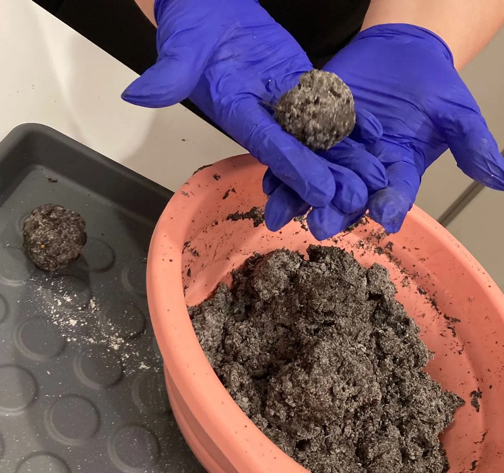
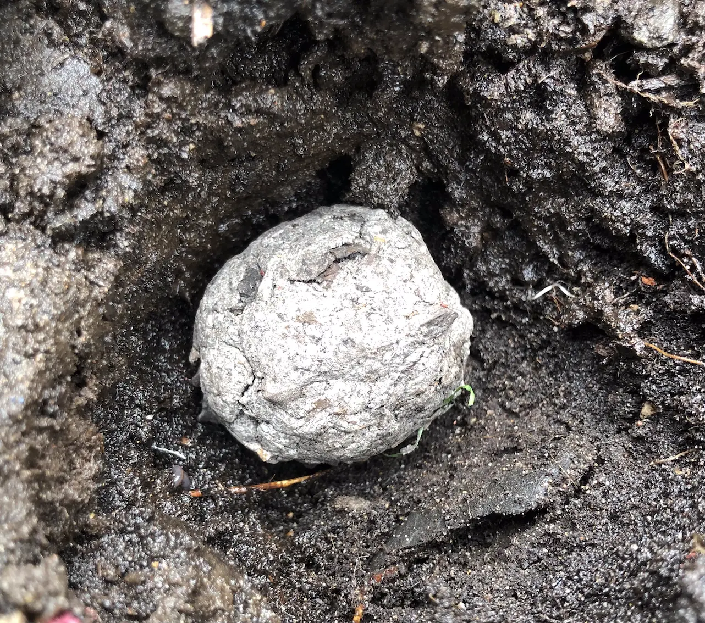

Making Seed Bombs
Sometimes associated with 'guerrilla gardening' and spreading flowers into unclaimed public spaces, seed bombs can also be useful at home to sow seeds in inaccessible parts of the garden, at the back of borders or amongst established plants.
You can buy them, but, for the same price, you can make many more and tailor them to your exact requirements.
And for those who have no idea what a 'seed bomb' is...they're simply plant seeds, rolled within a ball of materials that assist germination and bind everything together. Clay is commonly used, but we tried a mixture of compost and flour.
The items you need to gather are:
- 5 cups of compost
- 2 or 3 cups of plain flour
- 1 cup of seeds
- water
- mixing bowl
Combine the compost and flour in the mixing bowl.
Add the seeds and mix.
Gradually add water and mix until you have a substance that can be easily moulded.
Then the fun begins. Grab some of the mixture. The amount is up to you and depends how large you want your seed bombs to be. Anything goes!
It was suggested that we left the seed bombs to dry on the surface, but not to let them dry out completely. Obviously, any you'd buy would be dry throughout so you could take a chance...
Rather than throwing my seed bomb into the farthest corner of the garden and hoping for the best, I decided to choose a location that I thought might not be disturbed by our pets. I dug a small hole, placed the seed bomb within and watered it.
Add now I'm waiting. I think we used an assortment of wildflower seeds so who knows what will appear.